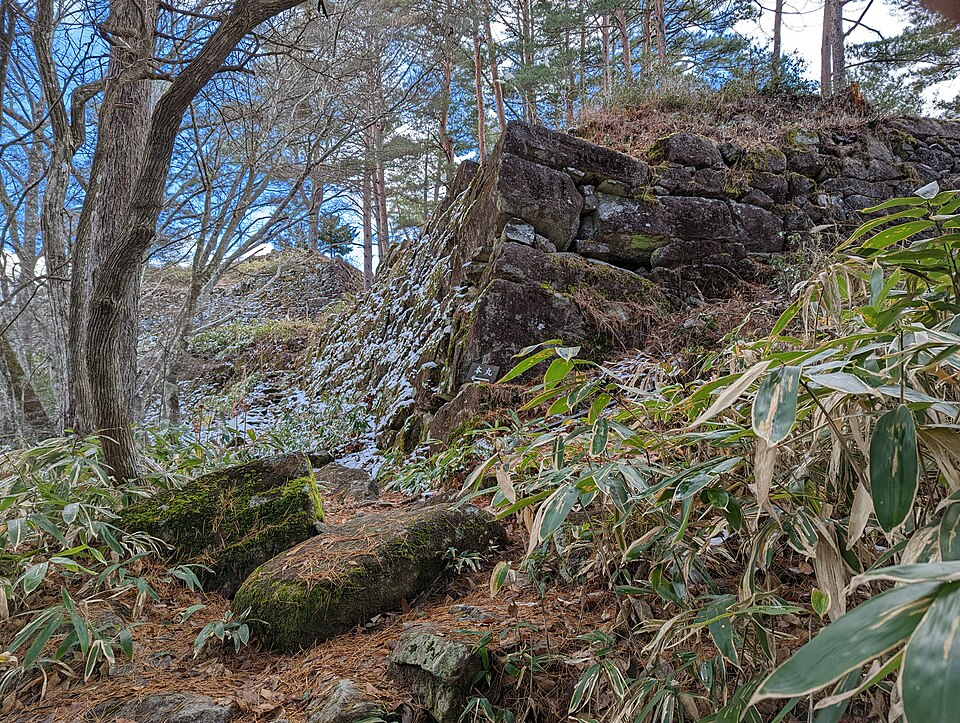
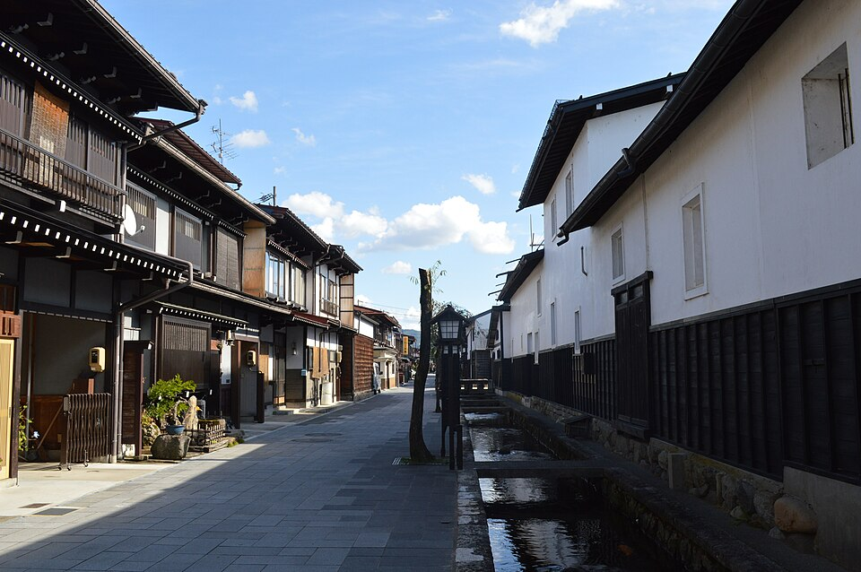
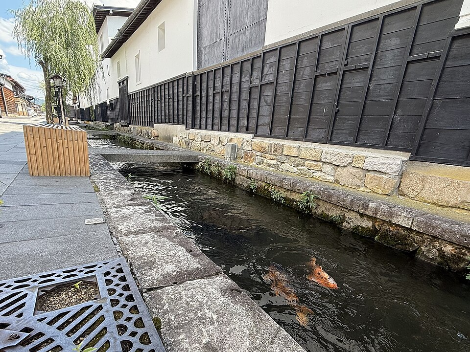

Takayama сегодня
1. Хайк: Hida no Sato и руины замка Matsukura



Hida no Sato - музей под открытым небом: больше 30 старых домов региона Hida эпохи Edo, свезены сюда в 1971 году, среди них соломенные gassho-zukuri из Shirakawa-go. Внутри очаги, утварь. Открыт 8:30-17:00, на осмотр обычно 2 часа. От вокзала 10 минут автобусом Sarubobo (примерно 2 раза в час) или 30 минут пешком.
Руины Matsukura - замок 1579 года на горе Matsukura (856 м), брошен в 1588-м. Сохранились каменные стены. Сверху вид на Takayama и на горы Norikura и Hotaka. На гору ведёт тропа от Hida no Sato.
| Время | Что |
|---|---|
| сейчас | Автобус Sarubobo или пешком 30 мин до Hida no Sato |
| ~1 ч | Музей коротко, главное - дома gassho |
| ~1,5 ч | Подъём к руинам и обратно (моя оценка, точного времени от музея источники не дают) |
| до 17:13 | Спуститься из леса до заката |
2. Город и история, без подъёмов


Takayama Jinya - управа, откуда наместник сёгуна правил Takayama, когда город был под прямым управлением сёгуната. Залы, рисовый склад, сад. 8:45-17:00, обычно 1 час.
Sanmachi - улицы старого города: дома купцов, сакэ-пивоварни (некоторые работают веками), лавки открыты примерно 9:00-17:00. В воскресенье людно.
Higashiyama Walking Course - 3,5 км, 1-2 часа: квартал храмов Teramachi (больше десятка храмов и святилищ), сельские окраины, лесистый холм Shiroyama, где стоял замок Takayama. Japan-guide честно пишет: не «вау», а спокойная сторона Takayama. Старт у Museum of History and Art, 15 мин пешком от вокзала. Подходит для обычной обуви, крутых участков в описании нет.
Рядом ещё Yatai Kaikan - зал с праздничными повозками фестиваля, 9:00-17:00.
3. Тихий городок Hida-Furukawa


Маленький город в 15 минутах к северу, «меньше и спокойнее, чем Takayama» (japan-guide). Так же разбогател на лесе и мастерах-плотниках. Канал Seto вдоль белых складов, в воде карпы; музей плотников Takumikan; старая лавка японских свечей Mishima.
| Поезд | Время |
|---|---|
| Туда | 14:20 → 14:46 (следующий 14:35 → 15:25) |
| Обратно | 16:10 → 16:27, 17:19 → 17:41, 18:09 → 18:27 |
Поезда: Yahoo!乗換案内 на 18.10, запрос в 13:20.
Канатка Shin-Hotaka - не сегодня

Канатная дорога не в Takayama, а в горах Okuhida: автобус 96-105 минут, в октябре работает до 16:00. Сегодня уже не успеть.
Источники: japan-guide.com (Hida no Sato, Higashiyama, Old Town, Yatai Kaikan, Furukawa), Komoot (петля Matsukura), Jcastle, Wanderlog, Yahoo!乗換案内, sunrise-sunset.org, Open-Meteo. Фото: Wikimedia Commons, автор и лицензия под каждым. Карта: Esri.